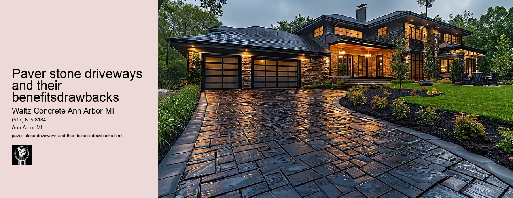

News
Concrete Driveway Installation Ann Arbor Mi
Concrete Driveway Installation Ann Arbor Mi
Choosing the right contractor for installation
Cost of concrete driveway installation in Ann Arbor
Permit requirements for driveway installation in Ann Arbor
The process and timeline of concrete driveway installation
Different types of concrete used in driveways
Maintenance and Repair of Concrete Driveways in Ann Arbor Mi
Maintenance and Repair of Concrete Driveways in Ann Arbor Mi
Preventive maintenance tips for durability
Common causes for concrete driveway damage
Professional companies offering repair services in Ann Arbor
Doityourself versus professional repairs
Costs associated with repairing a concrete driveway
Designs and Styles of Concrete Driveways in Ann Arbor Mi
Designs and Styles of Concrete Driveways in Ann Arbor Mi
Popular design trends for driveways
Considering climate factors when choosing a design or style
Unique customizations available for concrete driveways
Influence of home architecture on driveway design
Stamped stained and decorative options
Environmental Impact of Concrete Driveways in Ann Arbor Mi
Environmental Impact of Concrete Driveways in Ann Arbor Mi
Carbon footprint associated with concrete production
Use of sustainable materials in concrete driveways
Drainage considerations to reduce environmental impact
Local regulations regarding environmentally friendly driveways
Potential use of permeable or porous pavement
Alternatives to Concrete Driveways in Ann Arbor Mi
Alternatives to Concrete Driveways in Ann Arbor Mi
Asphalt driveways and their proscons
Paver stone driveways and their benefitsdrawbacks
Gravel or crushed stone as an alternative option
Comparing costs between different driveway materials
Resinbound surfaces as emerging technology
About Us
Contact Us

Paver stone driveways and their benefitsdrawbacks
Paver stone driveways and their benefitsdrawbacks
Title: Paver Stone Driveways: The Benefits and Drawbacks
Paver stone driveways have been increasingly popular in recent years, largely due to their aesthetic appeal and impressive durability. However, like any other material, they also come with certain limitations. This essay aims to shed light on the advantages and disadvantages of paver stone driveways.
To begin with, the most notable advantage of paver stone driveways is their aesthetic value. They are available in a variety of shapes, colors, sizes, and patterns that can easily complement any architectural style or landscape design. You can customize your driveway according to your preferences to enhance the curb appeal of your property.
Secondly, paver stones are exceptionally durable and resistant to heavy loads. Unlike asphalt or concrete driveways that crack under pressure or extreme weather conditions, paver stones retain their integrity for a long time. Moreover, if a portion of the driveway gets damaged over time, you only need to replace the affected stones instead of resurfacing the entire driveway.
Thirdly, due to their interlocking nature, paver stones provide better traction than other materials. This makes them an ideal choice for areas prone to snowfall or rain as they reduce the risk of slipping.
However, despite these advantages, paver stone driveways have some drawbacks too. One significant disadvantage is cost-related; not only are the materials themselves more expensive than asphalt or concrete but also installation costs tend to be higher because laying down pavers is labor-intensive work.
Another downside is maintenance requirements - although it's easier to replace individual damaged stones rather than resurface an entire driveway made from another material when damage does occur (such as stains or shifting), it nonetheless requires regular attention.
Lastly there's weed growth - gaps between paving stones offer perfect opportunities for weeds to grow unless preventative measures such as using polymeric sand during installation are taken which adds additional costs onto an already pricey project.
In conclusion, paver stone driveways offer remarkable aesthetic appeal and durability that can significantly enhance the value of any property. However, their high costs and maintenance requirements might discourage some homeowners from choosing this option. Therefore, when deciding on driveway materials, its important to consider both the advantages and drawbacks of paver stones and balance them against your budget, lifestyle, and personal preferences.
Asphalt driveways and their proscons
Paver stone driveways and their benefitsdrawbacks
Frequently Asked Questions
What are the benefits of using paver stones for driveways?
Paver stone driveways are highly durable and can withstand heavy loads, making them ideal for vehicles. Theyre also available in a variety of designs and colors, allowing homeowners to customize their driveways look. Additionally, they require less maintenance compared to other types of driveways.
What could be potential drawbacks of paver stone driveways?
Some potential drawbacks include the higher initial cost compared to concrete or asphalt, potential weed growth between stones if not properly maintained, and occasionally needing to replace individual stones due to chipping or cracking.
How do paver stone driveways compare with concrete ones in terms of durability and maintenance?
Both materials are quite durable, but paver stones tend to be more resistant to cracks than concrete. In terms of maintenance, while both types require regular cleaning, paver stones may need occasional replacement if individual ones get damaged.
Are there any specific weather conditions in Ann Arbor Mi that might affect the longevity or performance of a paver stone driveway?
Paver stone driveways can handle various weather conditions very well. However, in areas like Ann Arbor Mi where freezing temperatures are common during winter months, frost heave could potentially cause shifting or cracking over time unless proper installation techniques were used.
What is the process like for installing a paver stone driveway in comparison to a concrete one?
Installing a paver stone driveway requires careful preparation including excavation, grading the ground for proper drainage, laying a gravel base followed by sand layer before placing the stones one-by-one. Concrete installation involves preparing the ground as well but pouring concrete is typically quicker than placing individual paving stones. However, curing times may extend its overall completion timeline.
Paver stone driveways and their benefitsdrawbacks